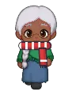

Wiki › Missões › ✨ O mapa do navegador
✨ O mapa do navegador
Nível 128 História Lisboa

A história
A Capitã Leonor guarda um mapa dos antigos navegadores com sete estrelas desenhadas. Ela está no Porão da Caravela. Vá ver!
O que fazer
🎯 Fale com a Capitã Leonor (Porão da Caravela, em Lisboa)
- Fale com Capitã Leonor, a navegadora
📍 Onde achar e como chegar
🙋Procure: Capitã Leonor, a navegadora
🗺️Onde: 🎯 Porão da Caravela (Lisboa)
🧭Viagem: ✈️ Pegue o avião para Lisboa, Portugal (a partir do nível 124) — no Brasil, o aeroporto fica na Cidade, com a Comissária Luana.
🧭Caminho: de lá: Lisboa → 🎯 Porão da Caravela
📌Lá dentro: embaixo no mapa (sul)
Recompensas
- ⭐ 535.725 XP
- 🪙 5.000 tostões